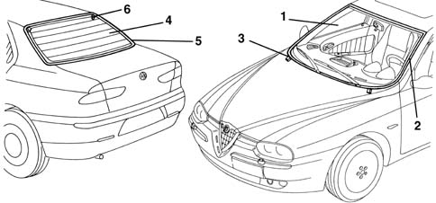

Introduction - BODYSHELL WINDOWS
- Path
- Descriptions > 70 FITTINGS > 7035 BODYSHELL WINDOWS > Introduction - BODYSHELL WINDOWS
- Kind
- system description
- Applies to
- all engines; all production periods
- Interactive page
- https://sloeber94.github.io/elrnDB-a156/en/#/3239241
Applies to: all engines; all production periods
GLOSSARY
Stratified window
This window consists of two layers of glass stuck together by means of a plastic film. If it breaks, even if it splinters, the pieces stay in place and visibility is reasonable.
Tempered window
The glass undergoes a heat tempering process in which the surface of the glass is subjected to strong compression. If it breaks, this glass shatters into pieces with rounded corners.
VIEW OF ASSEMBLY
The diagram shows the entire subassembly

1, Windscreen 2, Perimeter trim 3, Mounting pins 4, Rear window 5, Perimeter trim 6, Locating pins
DESCRIPTION
The windscreen and the rearscreen are bonded to the bodyshell and constitute structural elements contributing to the rigidity of the actual bodyshell.
The laminated (*) windscreen rests on two adjustable pins so that it fits more effectively into the windscreen compartment.
The tempered (*) rear window is fitted with two locating pins, which serve the same purpose.